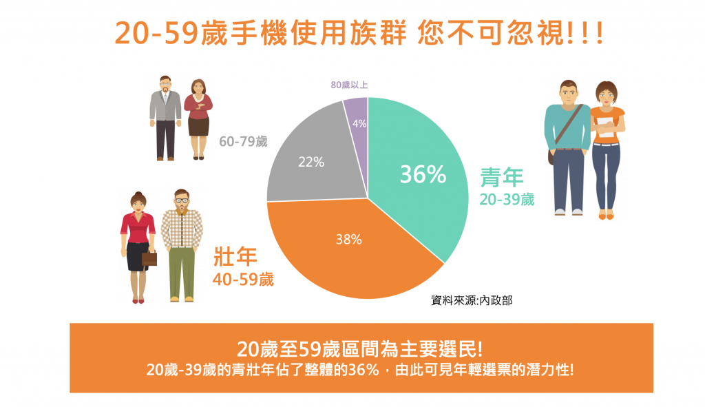
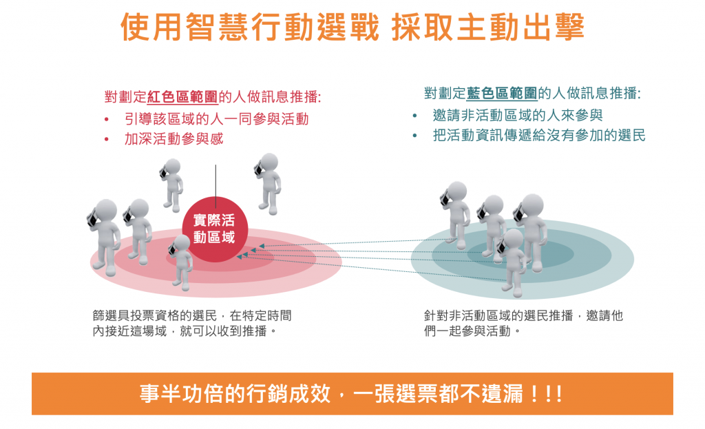
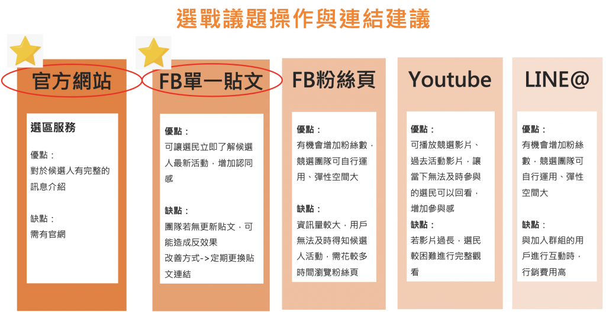
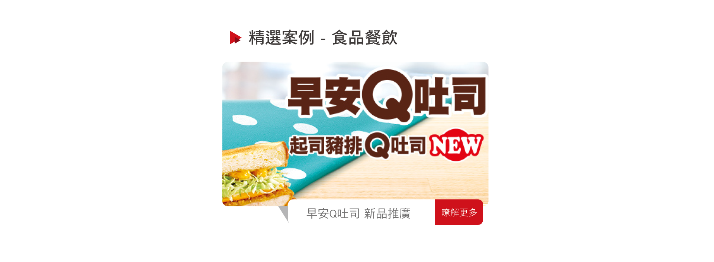
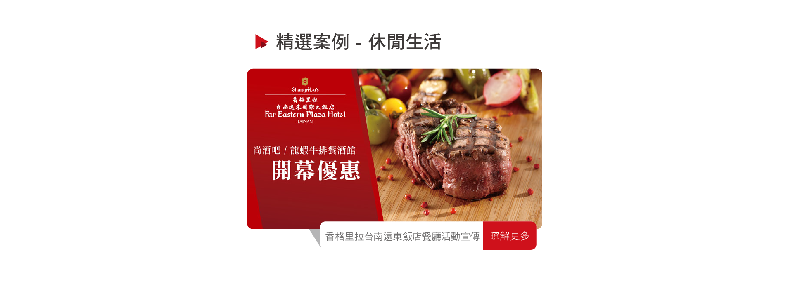
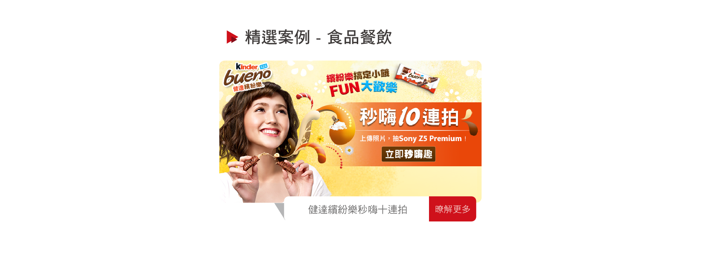
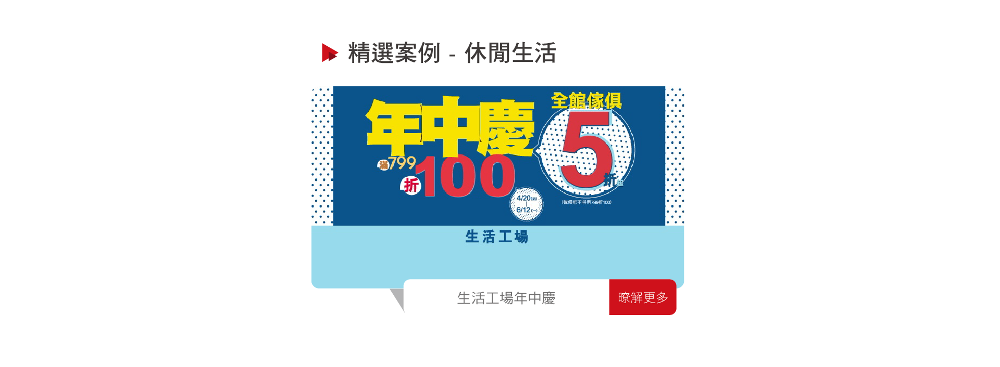
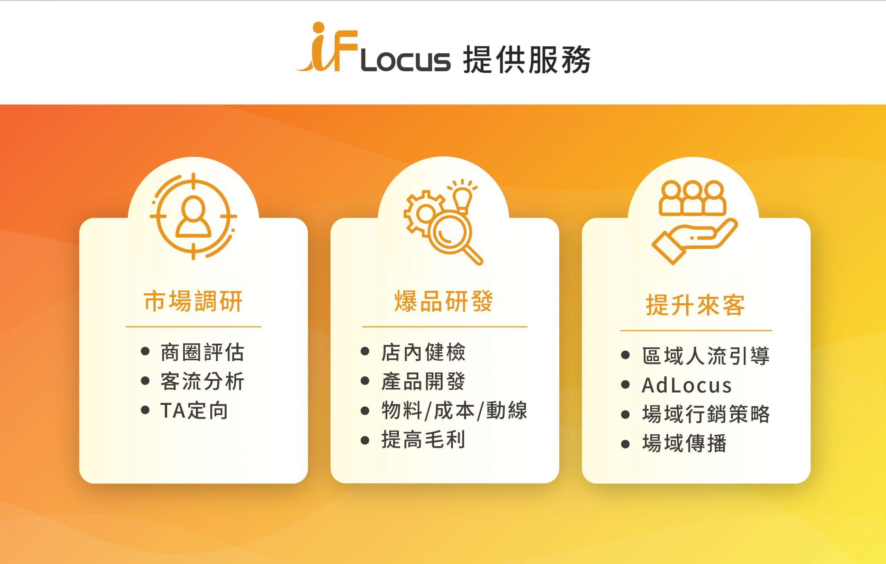
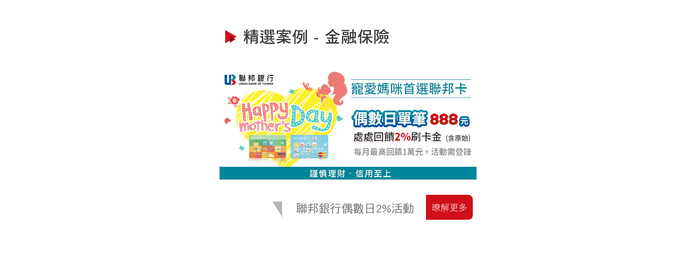
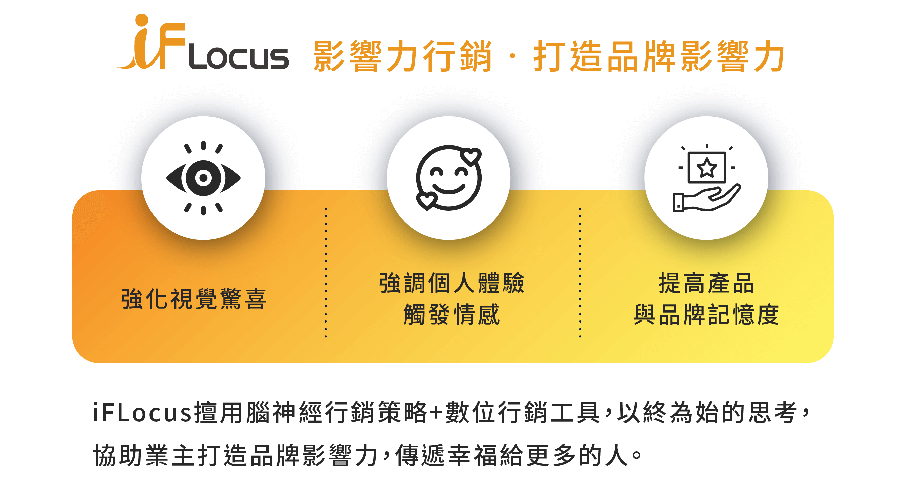

跨越多元產業，見證 iFLocus 以影響力、內容、數據與媒體導流創造的真實成效

透過手機場域推播廣告精準觸達選區選民，CTR 達 8.7%，超越一般數位廣告 4 倍。結合造勢場域、里辦、市場等生活場域密集推播。

選前兩週密集推播，即時監控廣告成效，依據數據調整策略，確保每一分選戰預算發揮最大效益。

以里辦公室、社區活動中心、菜市場等生活場域為核心推播，深度觸達在地選民，建立候選人親民形象。

針對全台連鎖速食門市門市周邊人群進行場域推播，新品上市首週觸及逾百萬潛在消費者，有效帶動新品嘗鮮率。

新門市開幕前一週，針對方圓 1km 的居民與上班族密集推播優惠資訊，開幕當日排隊人潮盛況空前。

結合互動式廣告創意與場域精準推播，活動期間 CTR 達 12%，遠超業界平均水準，成功引爆品牌話題聲量。

年中慶活動期間，透過商圈場域推播精準觸達購物中心周邊潛在消費者，到店人流較去年同期提升 35%。

機場、車站周邊及出差頻繁族群的精準推播，搭配限時優惠機制，活動期間訂票轉換率達業界最佳表現。
鎖定電信門市及競品手機展示場域周邊，精準推播新機發表廣告，有效提升新品知名度與預購轉換率。
週年慶期間，針對電玩門市及購物中心周邊進行場域推播，活動期間銷售量較平日提升 280%，促銷活動超額完成。
針對目標建案周邊 3km 範圍的高所得族群進行精準推播，有效提升看屋預約率，降低每位潛在客戶的取得成本。
結合百貨專櫃場域與競品美妝區域，精準觸達美妝消費族群，新品發布活動期間試用申請量超出預期目標 200%。

在主要購物商圈與百貨周邊進行信用卡回饋活動推播，精準觸達有消費意願的潛在辦卡族群，申辦轉換率提升 40%。
針對競品電信門市周邊的高頻訪客進行 5G 方案推播，有效截攔競品換機潮，帶動門號申辦數量大幅成長。
活動前三天針對周邊交通樞紐與年輕族群聚集場域進行推播，活動現場入場人次超出預期，創下歷年新高。
透過手機場域推播廣告導流至問卷頁面，精準篩選健康意識族群，單次名單取得成本較傳統數位廣告降低 60%。

針對門市周邊高頻訪客推播入會優惠，精準觸達潛在會員族群，活動期間新會員招募數量達預期目標的 185%。
結合消費者場域軌跡與購物行為分析，精準定位高消費潛力族群，新品上市首月銷售目標超達 130%。
結合線下場域推播與線上電商導流，打通 O2O 顧客旅程，周年慶期間整體業績較去年成長 42%。
進軍香港市場，針對銅鑼灣、旺角等核心商圈進行場域推播，協助品牌快速建立香港市場的數位行銷佈局。
立即聯絡 iFLocus 顧問團隊，為您規劃專屬的影響力營銷與整合行銷策略